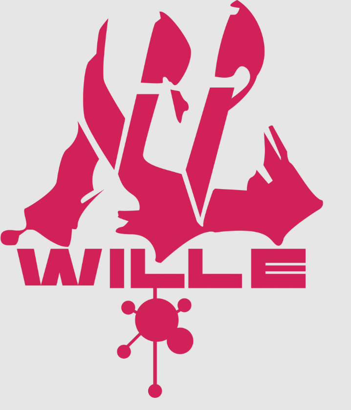
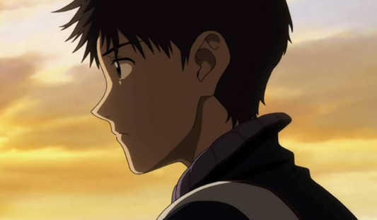
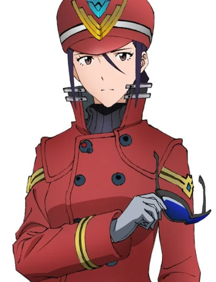
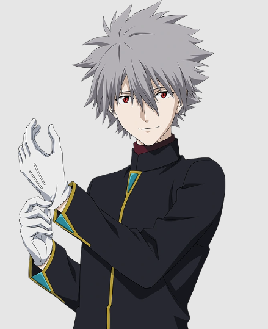
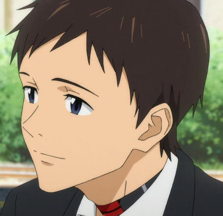
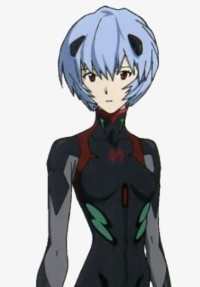
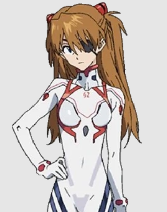

redefining the narrative with a darker tone.
Evangelion: 3.0 You Can (Not) Redo.
A COMPLETELY NEW PATH FOR THE STORY
Evangelion: 3.0 takes the series in a totally new direction, and it's not like anything fans expected. The story jumps forward, and everything feels very different—there are new places, new problems, and a much darker and more serious tone. It's clear that the Rebuild series is no longer following the original at all, which makes it so surprising and exciting to watch.
Released in 2012, this movie is full of bold changes and emotional moments. It leaves fans with a lot of questions and really makes you think about what's coming next. It's very unique and shows just how far the story can go.
CAUSION!!! if you scroll further there might be spoilers
So, a completely different thing huh?
|  |  |
A serious time skipSo, yeah—14 years. That's a lot. Everyone's older (except Asuka, because "Curse of Eva" magic), and Misato is now leading a new group, Wille, fighting against NERV, which is doing some shady stuff. |
compared to the other'sThe first two movies are pretty close to the original series, just with some new twists. But in 3.0, BAM, 14 years have passed! Shinji wakes up and has no idea what's going on. Everything's messed up, earth's wrecked, and all the characters he knew have changed. It's like he slept through the apocalypse! |
The little team trying to destroy the dark corporation

A NEW pilot's in town!
Founded after a civil war within NERV a few months after Near Third
Impact, WILLE was founded for the sole purpose of destroying NERV.
It's formed by former NERV members who've turned against their old
employer after the catastrophic events of Evangelion: 2.0. Their
goal is to stop NERV and prevent further apocalyptic events caused
by the Evangelion units and the Human Instrumentality Project.
The name “WILLE” comes from the German word for “will,” symbolizing
their determination to resist NERV and forge a new path for humanity.
every notable visual change of character after and before time skip:
 |
 |
 |
 |
Ritsuko Akagi |
misato katsuragi |
 |
 |  |
 |
Kowaru Nagisa |
Shinji Ikari |
 |
 |  |
 |
Rei Ayanami |
Shinji Ikari |